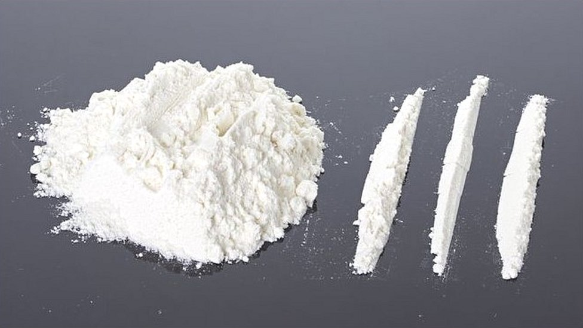
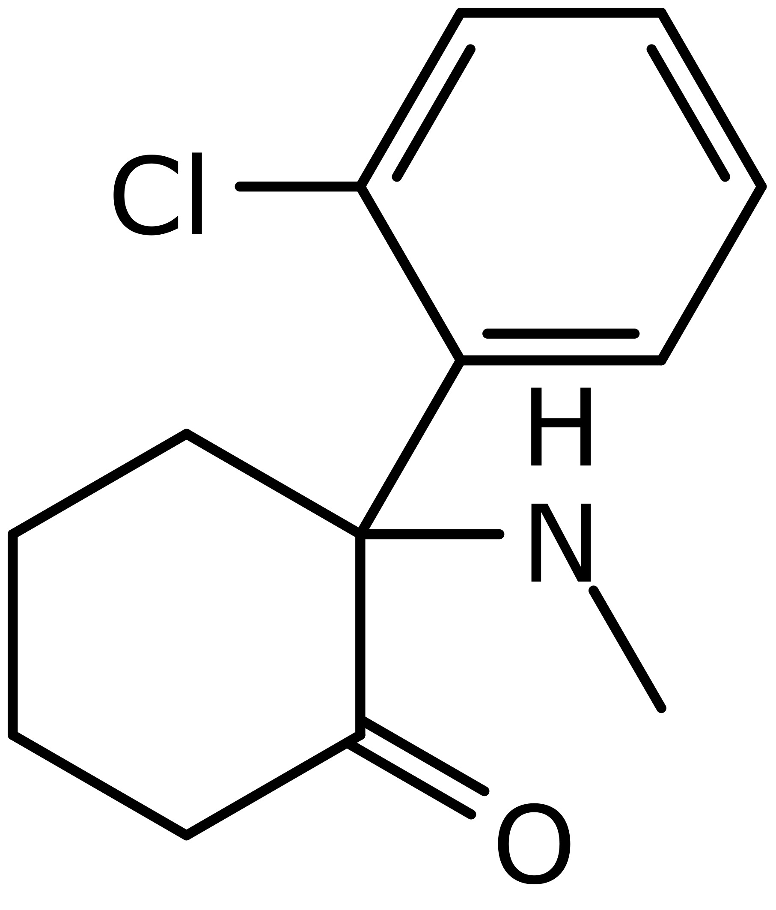

LOS ALUCINÓGENOS
Los alucinógenos son sustancias que alteran la percepción, el pensamiento y las emociones de una persona. Pueden producir alucinaciones, cambios en la conciencia, distorsiones de la realidad y experiencias psicodélicas
EFECTOS FÍSICOS
Los alucinógenos pueden producir una variedad de efectos físicos, que incluyen dilatación de las pupilas, aumento de la presión arterial, aumento de la frecuencia cardíaca, sudoración, temblores y náuseas.
EFECTOS PSICOLÓGICOS
Los alucinógenos pueden causar una amplia gama de efectos psicológicos, que van desde cambios en el estado de ánimo y la percepción, hasta experiencias espirituales profundas, pensamiento desorganizado y episodios de ansiedad o paranoia.
RIESGOS ASOCIADOS
El uso de alucinógenos conlleva ciertos riesgos. Estos incluyen el desencadenamiento de trastornos psicóticos en individuos vulnerables, la posibilidad de experiencias negativas o mal viajes, el aumento del riesgo de accidentes debido a la alteración de la percepción y la dificultad para discernir la realidad, así como la posible adicción en el caso de algunas sustancias, como la ketamina.
TIPOS DE ALUCINÓGENOS
-LSD
El LSD es un alucinógeno serotonérgico que se presenta en forma de cristales o en pequeños trozos de papel impregnados con la sustancia. Su estructura química es derivada del ácido lisérgico. Los efectos pueden variar ampliamente, pero pueden incluir alucinaciones, cambios en la percepción del tiempo y del espacio, euforia, taquicardia, dilatación de las pupilas, mareos, ansiedad y confusión. En algunos casos, el uso de LSD también puede desencadenar episodios de trastornos psicóticos o despersonalización.
ESTRUCTURA

-KETAMINA
La ketamina es un alucinógeno disociativo que se presenta comúnmente en forma de polvo blanco o líquido. Su estructura química es similar a la fenciclidina (PCP). Los efectos de la ketamina incluyen analgesia, distorsiones en la percepción del tiempo y del espacio, alteraciones en el pensamiento y el juicio, euforia, sensación de separación del cuerpo y amnesia. Aunque los efectos iniciales pueden ser eufóricos, dosis más altas pueden provocar mareos, náuseas, trastornos delirantes y dificultad para moverse.

ESTRUCTURA

-SALVIA DIVINORUM
La salvia divinorum es una planta que contiene salvinorina A, un compuesto alucinógeno potente. Los efectos de la salvia pueden incluir alucinaciones visuales intensas, disociación, alteraciones en la percepción del tiempo y euforia. Los efectos pueden ser breves pero muy intensos.
ESTRUCTURA

-DMT
El DMT es un alucinógeno serotonérgico que se encuentra en varias plantas e incluso en el cuerpo humano. Su estructura química es similar a la serotonina. Los efectos del DMT suelen ser rápidos e intensos, y pueden incluir alucinaciones visuales y auditivas, cambios en la percepción del tiempo y del espacio, euforia, aumento de la frecuencia cardíaca y presión arterial, y dilatación de las pupilas.
ESTRUCTURA